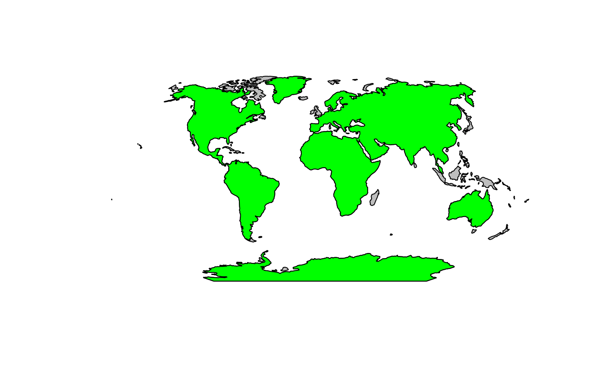
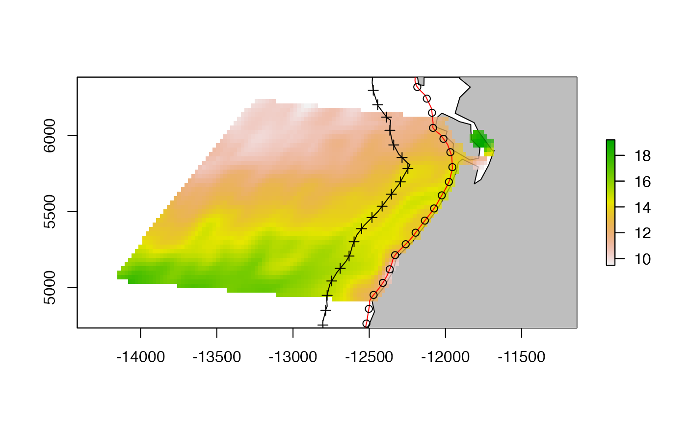

This example shows how the data in the package were created and saved. The details for how to do these calculations is in the articles in the basics package in my ocean satellite tools org.
Specify where to save the downloaded data. Data from a rerddap::griddap() call can be verbose, so you’ll probably want a folder for it.
# fil_dir <- file.path(here::here(), "inst", "extdata")
# if(!dir.exists(fil_dir)) dir.create(fil_dir)Winkel Tripel projection
crs.wintri <- "+proj=wintri +lon_0=0 +lat_1=0 +x_0=0 +y_0=0 +datum=WGS84 +units=km +no_defs"sample_raster
lats <- c(40.375, 50.375)
lons <- c(-141.875, -120.875)
df_info <- rerddap::info("ncdcOisst21Agg_LonPM180")
df <- rerddap::griddap("ncdcOisst21Agg_LonPM180", latitude = lats, longitude = lons, time = c("2021-06-19", "2021-06-19"), fields = "sst")$dataWe turn this matrix into a raster using the raster package and the rasterFromXYZ() function.
df2 <- data.frame(x = df$lon, y = df$lat, z = df$sst)
ras <- raster::rasterFromXYZ(df2, crs = "+proj=longlat")Convert to Winkel Tripel projection
ras.wintri <- raster::projectRaster(ras, crs = crs.wintri, over = TRUE)
lats.wintri <- raster::bbox(ras.wintri)[1, ]
lons.wintri <- raster::bbox(ras.wintri)[2, ]Set up the data frame.
sample_raster <- list(
df = df, raster = ras, lats = lats, lons = lons,
raster.wintri = ras.wintri, lats.wintri = lats.wintri,
lons.wintri = lons.wintri, crs = crs.wintri
)
world <- rnaturalearth::ne_countries(scale = "small", returnclass = "sp")
# Get rid of interior boundaries
world <- rgeos::gUnaryUnion(world)
world.wintri <- sp::spTransform(world, crs.wintri)
p <- lapply(world.wintri@polygons, slot, "Polygons")
big <- log(unlist(lapply(p[[1]], function(x) methods::slot(x, "area")))) > 14
# Only keep the continents
trim.world.wintri <- world.wintri
trim.world.wintri@polygons[[1]]@Polygons <- trim.world.wintri@polygons[[1]]@Polygons[which(big)]
trim.world.wintri@polygons[[1]]@plotOrder <- 1:length(trim.world.wintri@polygons[[1]]@Polygons)
slot(trim.world.wintri, "polygons") <- lapply(
methods::slot(trim.world.wintri, "polygons"),
"comment<-", NULL
)Here is a plot where the smaller polygons (grey) have been trimmed.

Note, the units for world.wintri were set to km. It is important that this code is run on a polygon in a meter projection as opposed to a long-lat projection.
The first polygon in the world object is the North-South American polygon. I am only going to use that one here.
buffer300 <- list()
polys <- list(wintri = world.wintri, trim.wintri = trim.world.wintri)
for (j in 1:length(polys)) {
world.poly <- polys[[j]]
buff1 <- rgeos::gBuffer(world.poly, width = 300, byid = TRUE)
# erase the inner world polygon
e <- raster::erase(buff1, world.poly)
# Use the `remove.holes()` function to get only the outer line.
e300 <- spatialEco::remove.holes(spatialEco::remove.holes(e))
# Only keep the continents
e300@polygons[[1]]@Polygons <- e300@polygons[[1]]@Polygons[2]
e300@polygons[[1]]@plotOrder <- as.integer(1)
el300 <- methods::as(e300, "SpatialLines")
df <- c()
n <- length(el300@lines[[1]]@Lines)
for (i in 1:n) {
df <- rbind(df, cbind(el300@lines[[1]]@Lines[[i]]@coords, ID = i))
}
tmp <- list(line = el300, polygon = e300, df = df, crs = crs.wintri)
buffer300[[names(polys)[j]]] <- tmp
}## Warning in sp::proj4string(x): CRS object has comment, which is lost in output; in tests, see
## https://cran.r-project.org/web/packages/sp/vignettes/CRS_warnings.html
## Warning in sp::proj4string(x): CRS object has comment, which is lost in output; in tests, see
## https://cran.r-project.org/web/packages/sp/vignettes/CRS_warnings.html
## Warning in sp::proj4string(x): CRS object has comment, which is lost in output; in tests, see
## https://cran.r-project.org/web/packages/sp/vignettes/CRS_warnings.html
## Warning in sp::proj4string(x): CRS object has comment, which is lost in output; in tests, see
## https://cran.r-project.org/web/packages/sp/vignettes/CRS_warnings.htmlSmooth the 300 km buffer to get rid of wiggles that will affect nearest point calculations.
el <- smoothr::smooth(el300, method = "ksmooth", smoothness = 5)## Warning in sp::proj4string(x): CRS object has comment, which is lost in output; in tests, see
## https://cran.r-project.org/web/packages/sp/vignettes/CRS_warnings.html## Warning in proj4string(obj): CRS object has comment, which is lost in output; in tests, see
## https://cran.r-project.org/web/packages/sp/vignettes/CRS_warnings.html
df <- c()
n <- length(el@lines[[1]]@Lines)
for (i in 1:n) {
df <- rbind(df, cbind(el@lines[[1]]@Lines[[i]]@coords, ID = i))
}
tmp <- list(line = el, df = df, crs = crs.wintri)
buffer300[["wintri.smooth"]] <- tmp
plot(trim.world.wintri, col = "grey")
plot(buffer300[["wintri.smooth"]][["line"]], add = TRUE, col = "red")Red line is the 300km offshore line.
Only Holes function direct adaptation from spatialEco::remove.holes()
only.holes <- function(x) {
if (!any(which(utils::installed.packages()[, 1] %in% "maptools"))) {
stop("please install maptools package before running this function")
}
xp <- slot(x, "polygons")
holes <- lapply(xp, function(x) {
sapply(
methods::slot(x, "Polygons"),
methods::slot, "hole"
)
})
res <- lapply(1:length(xp), function(i) {
methods::slot(
xp[[i]],
"Polygons"
)[holes[[i]]]
})
IDs <- row.names(x)
x.fill <- sp::SpatialPolygons(lapply(1:length(res), function(i) {
sp::Polygons(res[[i]],
ID = IDs[i]
)
}), proj4string = sp::CRS(sp::proj4string(x)))
methods::slot(x.fill, "polygons") <- lapply(methods::slot(
x.fill,
"polygons"
), maptools::checkPolygonsHoles)
methods::slot(x.fill, "polygons") <- lapply(methods::slot(
x.fill,
"polygons"
), "comment<-", NULL)
pids <- sapply(methods::slot(x.fill, "polygons"), function(x) methods::slot(x, "ID"))
x.fill <- sp::SpatialPolygonsDataFrame(x.fill, data.frame(
row.names = pids,
ID = 1:length(pids)
))
return(x.fill)
}Create buffer 280 km around the 300km line. Note because we are doing this around a line, we don’t need to erase the inner polygon as we had to do for the 300km line. Again this is only for the North-South America polygon.
buffer20 <- list()
polys <- list(wintri = buffer300$wintri$line, trim.wintri = buffer300$trim.wintri$line)
for (j in 1:length(polys)) {
p <- polys[[j]] # really line not poly
buff20 <- rgeos::gBuffer(p, width = 280)
# Remove the outer part of the polygons and make into lines.
e20 <- only.holes(buff20)
el20 <- methods::as(e20, "SpatialLines")
# Convert to a dataframe also.
df <- c()
n <- length(el20@lines[[1]]@Lines)
for (i in 1:n) {
df <- rbind(df, cbind(el20@lines[[1]]@Lines[[i]]@coords, ID = i))
}
tmp <- list(line = el20, polygon = e20, df = df, crs = crs.wintri)
buffer20[[names(polys)[j]]] <- tmp
}## Warning in sp::proj4string(x): CRS object has comment, which is lost in output; in tests, see
## https://cran.r-project.org/web/packages/sp/vignettes/CRS_warnings.html
## Warning in sp::proj4string(x): CRS object has comment, which is lost in output; in tests, see
## https://cran.r-project.org/web/packages/sp/vignettes/CRS_warnings.html
plot(trim.world.wintri, col = "grey")
plot(buffer300[["trim.wintri"]][["line"]], add = TRUE, col = "red")
plot(buffer20[["trim.wintri"]][["line"]], add = TRUE, col = "blue")Red line is the 300km offshore line. Blue line is the 20km offshore line.
We can plot the “trim” lines (islands removed) and see that the trim line will run through islands. Depending on the goal, that may or may not be a problem.
Next we want to sample the points every 100km along the coast.
sample_points <- list()
polys <- list(wintri = buffer300$wintri$line, trim.wintri = buffer300$trim.wintri$line)
for (j in c("wintri", "trim.wintri")) {
el20 <- buffer20[[j]][["line"]]
numOfPoints <- rgeos::gLength(el20) / 100
sample.pts.100km <- sp::spsample(el20, n = numOfPoints, type = "regular")
el300 <- buffer300[[j]][["line"]]
numOfPoints <- rgeos::gLength(el300) / 100
sample.pts.off.100km <- sp::spsample(el300, n = numOfPoints, type = "regular")
tmp <- list(km100 = sample.pts.100km, off.km100 = sample.pts.off.100km)
sample_points[[j]] <- tmp
}We will not use the trim line since we don’t want our samples to run into the islands.
plot(sample_raster$raster.wintri)
plot(world.wintri, col = "grey", add = TRUE)
plot(sample_raster$raster.wintri, add = TRUE, alpha = 0.75)
plot(buffer300[["wintri"]][["line"]], add = TRUE)
plot(buffer20[["wintri"]][["line"]], add = TRUE, col = "red")
plot(sample_points[["wintri"]]$km100, add = TRUE, pch = 1)
plot(sample_points[["wintri"]]$off.km100, add = TRUE)
Create a matching set of off-shore points.
for (j in c("wintri", "trim.wintri")) {
el20 <- imageryML::buffer20[[j]][["line"]]
l.offshore <- imageryML::buffer300[[j]][["line"]]
coast.pts <- sample_points[[j]]$km100
os.pts <- getNearestPointOnLine(l.offshore, coast.pts, smooth.method = "ksmooth")$sp
sample_points[[j]]$km100.offshore.pair <- os.pts
}Create lat-lon versions
## Save the objects
crs.latlon <- sp::CRS("+proj=longlat +datum=WGS84")
j <- "wintri"
sample_points[["latlon"]]$km100 <- sp::spTransform(sample_points[[j]]$km100, crs.latlon)
sample_points[["latlon"]]$km100.offshore.pair <- sp::spTransform(sample_points[[j]]$km100.offshore.pair, crs.latlon)
sample_points[["latlon"]]$off.km100 <- sp::spTransform(sample_points[[j]]$off.km100, crs.latlon)
j <- "trim.wintri"
sample_points[["trim.latlon"]]$km100 <- sp::spTransform(sample_points[[j]]$km100, crs.latlon)
sample_points[["trim.latlon"]]$km100.offshore.pair <- sp::spTransform(sample_points[[j]]$km100.offshore.pair, crs.latlon)
sample_points[["trim.latlon"]]$off.km100 <- sp::spTransform(sample_points[[j]]$off.km100, crs.latlon)
j <- "wintri"
df <- cbind(as.data.frame(sample_points[[j]]$km100), as.data.frame(sample_points[[j]]$km100.offshore.pair))
j <- "latlon"
df <- cbind(df, as.data.frame(sample_points[[j]]$km100), as.data.frame(sample_points[[j]]$km100.offshore.pair))
colnames(df) <- c("x.km.ns", "y.km.ns", "x.km.os", "y.km.os", "lon.ns", "lat.ns", "lon.os", "lat.os")
write.csv(df, row.names = FALSE, file = file.path(here::here(), "inst", "extdata", "sample_point_pairs.csv"))
j <- "trim.wintri"
df <- cbind(as.data.frame(sample_points[[j]]$km100), as.data.frame(sample_points[[j]]$km100.offshore.pair))
j <- "trim.latlon"
df <- cbind(df, as.data.frame(sample_points[[j]]$km100), as.data.frame(sample_points[[j]]$km100.offshore.pair))
colnames(df) <- c("x.km.ns", "y.km.ns", "x.km.os", "y.km.os", "lon.ns", "lat.ns", "lon.os", "lat.os")
write.csv(df, row.names = FALSE, file = file.path(here::here(), "inst", "extdata", "sample_point_pairs_trim.csv"))
crs_wintri <- crs.wintri
save(crs_wintri, file = file.path(here::here(), "data/crs_wintri.rda"))
save(world, world.wintri, trim.world.wintri, file = file.path(here::here(), "data/world.rda"))
save(buffer300, buffer20, file = file.path(here::here(), "data/buffers.rda"))
save(sample_points, file = file.path(here::here(), "data/sample_points.rda"))